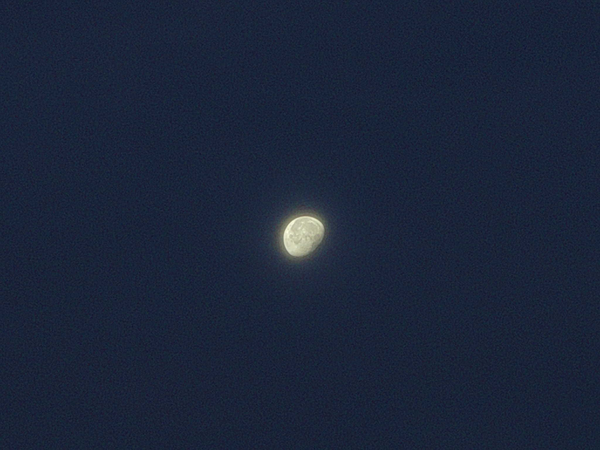
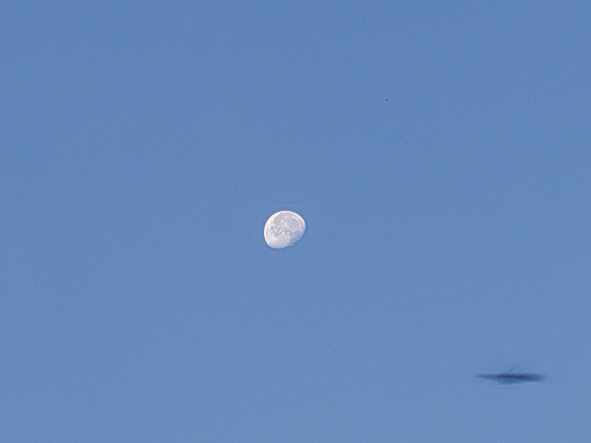

随着世界逐渐喧嚣，宇宙的远端暂退幕后～
伴着东方的光芒四射，在天幕的西南方渐隐的月亮～和一只倏掠的飞鸟
՞˶･֊･˶՞
日出时背向大家注目的方向，望着月球与星星悄然消失，也是很奇妙的体验喵～
星星会某次忽地跳出咱的眼界，就再也找不回来了；而月亮是渐溶渐淡，直到虚渺的轮廓融入天空🥰

伴着东方的光芒四射，在天幕的西南方渐隐的月亮～和一只倏掠的飞鸟
՞˶･֊･˶՞
日出时背向大家注目的方向，望着月球与星星悄然消失，也是很奇妙的体验喵～
星星会某次忽地跳出咱的眼界，就再也找不回来了；而月亮是渐溶渐淡，直到虚渺的轮廓融入天空🥰


崭新的太阳喵～（前天）来自青岛栈桥的朝霞～
极天云一线异色，须臾成五采🥰
云霞的颜色每一刻都会不一样，或许肉眼盯着不太明显，但是对比间隔半分钟的照片，就能发现紫粉橙金随着阳光的徐进悄然此消彼长～晕出梦幻的地毯质棉纹♡( ✿＞◡❛)
愿咱们的心情和炽阳在天际绘出的墨彩一样灿烂～˃ 𖥦 ˂ ～ https://t.co/OWj2v4kF79
极天云一线异色，须臾成五采🥰
云霞的颜色每一刻都会不一样，或许肉眼盯着不太明显，但是对比间隔半分钟的照片，就能发现紫粉橙金随着阳光的徐进悄然此消彼长～晕出梦幻的地毯质棉纹♡( ✿＞◡❛)
愿咱们的心情和炽阳在天际绘出的墨彩一样灿烂～˃ 𖥦 ˂ ～ https://t.co/OWj2v4kF79